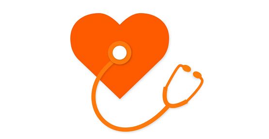

<!DOCTYPE html>
<html align="center" style="font-family:love;cursor:default" leftmargin="0" topmargin="0" οncοntextmenu="return false" οndragstart="return false" onselectstart="return false" οnselect="document.selection.empty()" οncοpy="document.selection.empty()" onbeforecopy="return false" οnmοuseup="document.selection.empty()" ondragstart="return false;" oncontextmenu="return false;"><center><head><meta name="viewport" content="width=device-width, initial-scale=1, maximum-scale=1, minimum-scale=1, user-scalable=no"><meta charset="utf-8">
<title>心理FM</title><link rel="Shortcut Icon" href="favicon.ico" type="image/x-icon"><style>
body{margin:0px;padding:0px;}html{background-image: url(../image/fmb.jpg);}

html{Background-attachment:fixed;background-color: #fff;background-attachment: fixed;background-size: 170% auto;}
  @font-face {
  font-family: love;
  src: url(https://zarispro.github.io/image/rubik.ttf);
}
  @font-face {
  font-family: yy;
  src: url(https://zarispro.github.io/image/lanting.TTF);
}
body { font-family: love, yy, sans-serif; }
</style></head><body align="center"><br>


<style>#zar002{width: 100%;font-size: 25px;background-color: #000000;position: fixed;left:0;top:0;z-index:1000;}#google{position: fixed;left:13;top: 3;}
#zar003{font-size: 22px;}

@keyframes example {

0%{position: fixed; left: -63px; bottom: 18px;box-shadow: 0 0 9px #ffffff;transform: rotate(-90deg);}
  50%{position: fixed; left: 16px; bottom: 18px;box-shadow: 0 0 7px #ffffff;transform: rotate(-90deg);}
  100%{position: fixed; left: 16px; bottom: 18px;box-shadow: 0 0 23px #ff34ff;}
}
@keyframes rnydh0001 {
  from {color: #fefefe00}
  to {color: #fefefeee}
}
#rny001{
background-size: 100% auto;
font-size: 30px;color: #fefefeee;
animation-name: rnydh0001;
  animation-duration: 0.526s;
}
#rny002{width: 315px;height:120px;box-shadow: 0 0 10px #333;
margin-top: 0px;
}
.lemon{background-image: linear-gradient(to bottom right, #480000, #ff0000);color: #eeeeee; animation-name: seeee;animation-duration: 0.7s;}
.lemon2{background-image: linear-gradient(to bottom right, #0040d967, #1999ff66);color: #eeeeee; animation-name: seeee;animation-duration: 0.74s;backdrop-filter: blur(28px);}
.lemon1{background-image: linear-gradient(to bottom right, #005f00, #67ff64);color: #eeeeee; animation-name: seeee;animation-duration: 0.7s;}
.dongh1:{
 animation-name: exemeee;
  animation-duration: 0.7s;
}
@keyframes exemeee {
   0%   {transform: translate(400px, 0px);}

  100% {transform: translate(0px, 0px);}
}
@keyframes seeee {
  0%   {transform: translate(-500px, 0px);}
100% {transform: translate(0px, 0px);}
}

</style>
<br><br>
<div id="rny001" style="backdrop-filter: blur(24px);padding: 0px;height:auto"></div>
<br>


<a href="1/"><div id="rny002" class="lemon2"><div id="rny002" style="margin-left:0px;margin-right:0px;box-shadow: 0 0 0px #000;">
<span style="font-size: 32px;">生命里的那些阳光</span>
<br><br>
<div style="font-size: 16px;margin-left: 5px;margin-right: 5px;" align="left"></div>

</div>
</div></a>

<br>
<a href="2/"><div id="rny002" class="lemon2"><div id="rny002" style="margin-left:0px;margin-right:0px;box-shadow: 0 0 0px #000;">
  <span style="font-size: 32px;"><marquee>永远不要相信任何人对你的任何评价</marquee></span>
  <br><br>
  <div style="font-size: 16px;margin-left: 5px;margin-right: 5px;" align="left"></div>
  
  </div>
  </div></a>
  <br>
<style> #backnew{transform: rotate(0deg);transition: 1s;}#backnew:hover{transform: rotate(-360deg);

transition: 0.6s;
}
a{text-decoration:none}

/* 向此元素应用动画效果 */
#backnew {

  animation-name: example;
  animation-duration: 0.91s;
}</style></a>
<div id="zar002" align="center" style="background-color: #008f0087;color: #fff;text-shadow: 0 0 2px #fff;backdrop-filter: blur(29px);"><div class="dropdown" align="center">
  <button class="dropbtn">心理FM</button>
 <center><div align="center" class="dropdown-content" style="border-radius: 25px;">
  <a href="../c/">日历</a>
  <a href="../ad/">商业广告</a>
  </div></center>
</div></div>


<style>


.dropbtn {
  background-color: #11111100;
  color: white;
  padding: 0px 18px;
  font-size: 26px;
  border: none;
  cursor: pointer;
}

.dropdown {
  position: relative;
  display: inline-block;
}
闲置{}
.dropdown-content {
  display: none;
  position: absolute;
  background-color: #ffffff;
  min-width:102;
  box-shadow: 0px 8px 18px 0px rgba(0,0,0,0.2);
  z-index: 1000;
backdrop-filter: blur(23px);
}

.dropdown-content a {
  color: black;
  padding: 10px 10px;
  text-decoration: none;
  display: block;
}

.dropdown-content a:hover {background-color: #f1f1f1dd;border-radius: 25px;}

.dropdown:hover .dropdown-content {
  display: block;
}

.dropdown:hover .dropbtn {
  background-color: #11111100;
}


#text1{font-size: 23px;margin-top: 250px;}
#text2{font-size: 16px;margin-top: 24px;margin-left: 22px;margin-right: 21px;}body{

        overflow-x:hidden;

    }
    html{

        overflow-x:hidden;

    }
</style>


<br><br><br><br>

</body>


<a href="../"></a>

</center></html>
